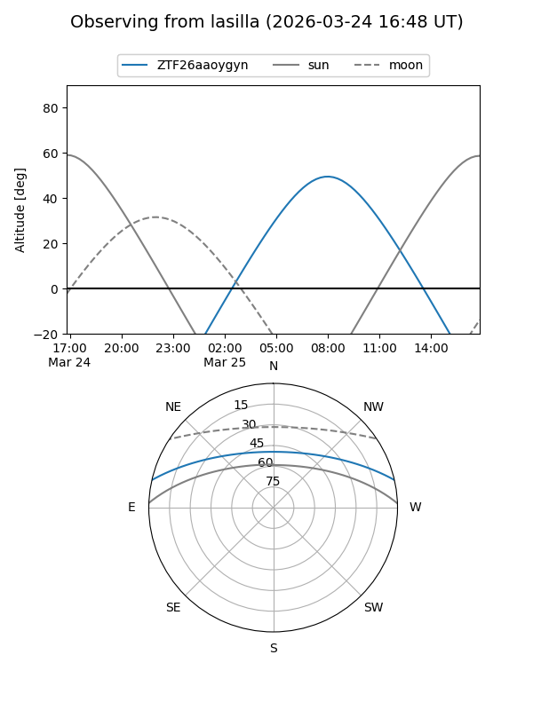
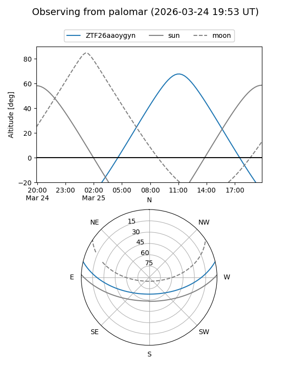

ZTF26aaoygyn
Target ZTF26aaoygyn at 2026-03-25 13:29
Aliases and brokers:
FINK: link
Lasair: link
ALeRCE: link
alt names
ZTF26aaoygyn (ztf,fink_ztf)
Coordinates:
equatorial (ra, dec) = 231.4332,+11.28669
equatorial (HMS+DMS) = 15:25:43.96,+11:17:12.08
galactic (l, b) = (16.9253,+50.49658)
Flags:
Photometry:
last ztfg=18.68, ztfr=18.17
1 ztfg, 1 ztfr detections
Lightcurve
Visibility


Additional plots